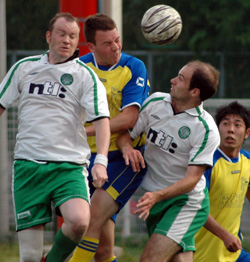
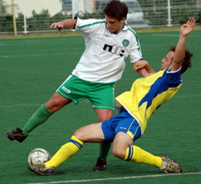

|
Hachioji Park, Sunday 17th June,
Last game and barring an absolute freak thrashing (cup game aside) this game would see the Celts stay up in TML 1 next season. On a scorching hot surface Celts and Geckoes resumed after the washed out previous game. Geckoes came into the game safe in division 1 and showing off some shiny new silverware. But it was the Celts who started brightly with some crisp passing and confident play. Yet good things rarely last especially for us and somewhat against the run of play a quick break by Geckoes allowed their centre forward to get in behind the back four, nip in front of Aki and finish well. It could have got far worse as a very similar opportunity quickly followed but Aki stood up well. The tought of an 8-0 defeat never entered the mind!
Shortly after, a Geckoes attack was cut out, Derm got his foot on the ball took out his radar and measured a pass to Paddy coming in from the right. Rob committed himself and Paddy did enough to lift it over him into the empty net. 1-1 and for the first time in a long time Celts were enjoying their football.
The second half saw some decent passing and movement from both teams especially as the heat and drink starting influencing legs and minds. Eduardo was starting to get some joy and wrestling practice out on the left. I hope those two swapped numbers at the end because they both looked like they were enjoying themselves. Damo was battling like a drunken Waterford man on a sat nite who hasnt got his curry chips and his battling paid off with a corner. Rick expertly took it missing out the obvious free man to aim for a leaping Henry who powered in a header. 2-1. Damo then went on to finish off one of his chances to complete a satisfactory game from a Celts point of view with a 3-1 victory. Very solid performances all over the pitch and even finished the game with possibly the oldest two defenders in world football. Roger Milla looks young compared to these two.
Congrats again to Geckoes who enjoyed their cup final recently and thanks to the ref who was outstanding.
Finally thanks to all the Celt lads on a thoroughly forgettable season! We stayed up and we'll be back for more next year.
Adieu, Au revoir, slan leat
Report by Gavin Duffy
|